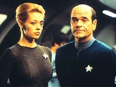
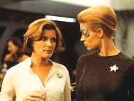
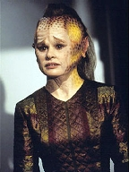
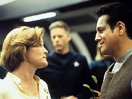
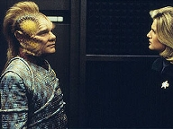
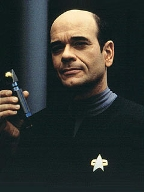
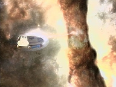

| MANCHETE
DO EPISDIO
Neelix
questiona suas crenas religiosas ao voltar da morte
Episdio
anterior | Prximo episdio Sinopse:
Data Estelar: 51449.2.  Neelix
designado para coletar uma amostra de proto-matria de uma nebulosa
prxima. No entanto, atingido por uma descarga de energia e morto. Enquanto
Janeway se prepara para conduzir uma cerimnia de funeral Talaxiana, Seven of
Nine anuncia que suas nanossondas Borg podem ser usadas para reanim-lo. Apesar
de ctica, a capit a autoriza a prosseguir e Neelix volta vida..
Ele fica perturbado com sua experincia. Explica a
Chakotay que seu povo acredita em um ps-vida centrado na "Grande
Floresta". Diz que quando um Talaxiano morre, seus ancestrais supostamente
vo ao seu encontro na "rvore-guia". Neelix sempre encontrou
conforto na crena de que toda a sua famlia se reuniria de novo um dia, mas,
agora, percebe que no vivenciou nada daquilo quando morreu.
 Enquanto a tripulao se rene para celebrar o Prixin,
um feriado familiar Talaxiano, Neelix visita Naomi, a filha da alferes Wildman.
Ela a coloca para dormir, como de costume, mas altera-se quando ela pede que ele
lhe conte a histria usual da Grande Floresta. Mais tarde, Neelix revela sua
frustrao para Seven, argumentando que sua vida no tem mais sentido agora
que as crenas mais profundas foram despedaadas.
Subitamente, o Talaxiano cai no cho, sentindo fortes
dores. Suas clulas esto revertendo a um estado necrtico, rejeitando as
nanossondas Borgs. Seven faz os ajustes necessrios para compensar. Ainda
perturbado, Neelix pede que Chakotay o ajude em uma jornada espiritual, para que
possa ver dentro de si mesmo e encontrar algum tipo de resoluo. Quando as
vises comeam, Neelix encontra sua irm amada e membros da tripulao, que
lhes dizem que a vida ps-morte uma mentira e que ele no tem razes para
viver. Neelix sai da viso determinado a se suicidar.
 Aps gravar notas de despedida aos colegas, ele tenta se
transportar para a nebulosa. Chakotay corre para impedi-lo, mas Neelix protesta,
alegando que a jornada o convenceu que seria melhor se estivesse morto. O
comandante explica que as imagens no so facilmente interpretadas e que
provavelmente eram expresso da ansiedade sobre suas crenas abaladas. O
Talaxiano no se convence at que a alferes Wldman o chama para ajudar a
colocar Naomi na cama. Ele percebe que a tripulao - que se tornou sua
famlia - precisa dele, e que esta a sua razo de viver.
Comentrios:
 "Mortal Coil" raridade, uma das poucas
(e boas) peas efetivamente centradas em Neelix, desde "Jetrel",
do primeiro ano. E, surpreendentemente, convence, apesar de lidar com a
"arriscada" temtica do vida ps-morte. Essa fronteira bastante
recorrente em Voyager. Apareceu em "Emanations",
"Sacred Ground" e "Coda",
e retornar em temporadas seguintes. Mas aqui se destaca, porque o desfecho
no apela para a "soluo mais fcil", tambm corriqueira na
srie.
Neelix sofre um acidente e fica morto durante 18 horas.
Reanimado com tecnologia Borg, passa a questionar suas crenas religiosas mais
profundas. Revolta-se ao se dar conta de que no viu o que deveria ter visto do
outro lado. Apoiava-se na f Talaxiana para se consolar pela perda da famlia
inteira na guerra com os Haakonians. O que costumava lhe dar esperana, fora
e sentido existncia esvaziou-se de significado.
 preciso abrir um primeiro parntese aqui. Um grande
mrito do episdio honrar o passado do personagem e o que foi previamente
estabelecido no seriado. O telespectador identifica-se com Neelix e sua
situao, pois os fatos so amarrados de maneira a no provocar conflito de
informaes. Pode no parecer grande coisa, mas, em Voyager, cada
ponto positivo conta. Quando a cronologia respeitada, a fico torna-se
crvel.
Outro aspecto positivo: a forma como o tema tratado,
sem pieguice ou inteno de provar o que certo ou errado nas crenas e
fs. "Mortal Coil" funciona justamente por no tentar
fornecer respostas absolutas. O que se tem uma anlise de como as pessoas -
no caso, Neelix - lidam com suas experincias de quase-morte, e a crise por que
esse personagem especfico atravessa, quando se depara com a frustrao. A
escolha dos roteiristas pela simplicidade termina por apresentar ao pblico uma
histria profunda.
 H, aqui, um "twist" interessante na
personalidade de Neelix. Desde o piloto da srie, ele parece ser muito
transparente e emotivo. Quase previsvel. Mas, neste segmento, ele revela que
todo o otimismo e alegria so, de fato, a forma de lidar com um lado
problemtico. Ele nunca engoliu a perda trgica dos parentes. Em "Jetrel",
o f conhece sua frustrao e sentimento de culpa por no ter morrido
tambm.
Alm do roteiro, a atuao se destacou. Ethan Phillips
pde mostrar um pouco mais da sua versatilidade como ator. A mesma chance foi
dada a Beltran, que costuma ser deixado quieto na sua cadeira. Alis, o papel
de Chakotay foi decisivo em "Mortal Coil". O comandante tenta
aliviar a crise do colega ao dizer que, talvez, a morte no possa ser
compreendida do ponto de vista dos vivos. um completo desconhecido,
possivelmente impossvel de se conhecer. Pode ser que Neelix no tivesse
discernimento para perceb-la com olhos de um ser vivo. Isso significa que suas
crenas so infundadas? No. "A morte ainda um dos maiores
mistrios", argumenta Chakotay.
 O episdio chega ao clmax quando Neelix decide cometer
o suicdio, aps tentar - sem sucesso - encontrar uma razo para estar vivo.
O dilogo com Chakotay foi muito bem montado. E tambm o foi a resoluo. A
alferes Wildman reaparece diretamente sada de "Deadlock",
com a filha, Naomi. outro trao de continuidade que no pode passar
desapercebido. Mostra que os roteiristas no as esqueceram e que, no caso de
"crianas com medo do monstro do replicador", Neelix tem a melhor
soluo.
Atravs de Naomi, o Talaxiano percebe que a tripulao
precisa dele. E este o sentido de sua existncia. As cenas finais so
promissoras. Mas, infelizmente, a que o segmento peca um pouco. A
reconciliao de Neelix consigo mesmo parece ter-se dado depressa demais.
Chakotay lhe diz que levar um tempo para digerir a experincia. Mas,
claro, nunca mais se falar no assunto. Trata-se de
um problema crnico em Voyager: memria curta. E, para isso, no h
hypospray que ajude!
Citaes:
Neelix - "Cylinder, little cylinder,
where are you? Cylinder, you were here a month ago. Now I know that you didn't
just roll out of the airlock all by yourself. Now where are you? Oh, I'm sorry.
I'm talking to myself. It's my way of remembering things."
("Cilindro, cilindrinho, onde est voc? Cilindro, voc estava aqui h
um ms. Eu se que voc no saiu rolando pela escotilha por conta prpria.
Onde est? Oh, me desculpe. Estou falando comigo mesmo. meu jeito de
lembrar das coisas.")
Seven - "You are a peculiar creature, Neelix."
("Voc uma criatura peculiar, Neelix.") Neelix - "Nanoprobes?"
("Nanossondas?")
Janeway - "It was necessary to repair the necrotised tissue."
("Foi necessrio para reparar seu tecido morto.")
Doutor - "Until I'm certain the damaged tissue can function
independently, you'll have to be injected with nanoprobes on a daily basis."
("At que eu tenha certeza que que o tecido danificado pode funcionar
independentemente, voc ter que receber injees de nanossondas em uma
base diria.")
Neelix - "Well, as long as I don't start assimilating the crew or
sprouting Borg implants, I'm sure I can live with it."
("Bom, contando que eu no comece a assimilar a tripulao ou
desenvolver implantes Borgs, tenho certeza de que consigo viver com isso.") Chakotay - "You
can't be certain of that. Don't throw away a lifetime of faith because of one
anomalous incident. Death is still the greatest mystery there is."
("No pode ter certeza disso. No jogue fora uma vida inteira de
f por causa de um incidente anmalo. A morte ainda o maior mistrio que
existe.")
Neelix - "I was there. I experienced it. There was nothing."
("Eu estive l. Eu a vivenciei. No havia nada.") Trivia:
 Para os Borgs, os Kazon so a Espcie 329.
Para os Borgs, os Kazon so a Espcie 329.
Naomi Watts no est listada na relao de
tripulantes da Voyager, de acordo com Seven of Nine. Ficha
tcnica: Direo de
Allan Kroeker
Escrito por Bryan Fuller
Exibido em 17/12/1997
Produo: 080 Elenco: Kate
Mulgrew como Kathryn Janeway
Robert Beltran como
Chakotay
Roxann Biggs-Dawson como B'Elanna Torres
Robert
Duncan McNeill como Tom Paris
Ethan Phillips como
Neelix
Robert Picardo como Doutor
Tim Russ
como Tuvok
Jeri Ryan como Seven of Nine
Garrett Wang como Harry Kim Elenco
convidado:
Nancy Hower como Ensign Samantha Wildman
Robin Stapler como Alixia
Brooke Ashely Stephens como Naomi
Episdio
anterior | Prximo episdio
|